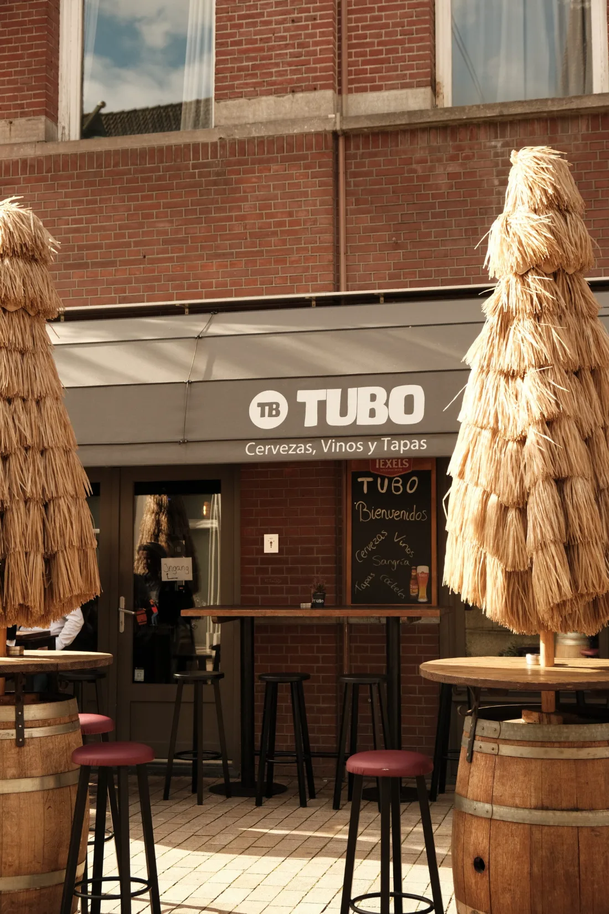
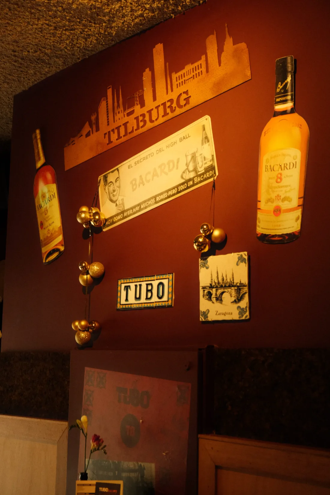
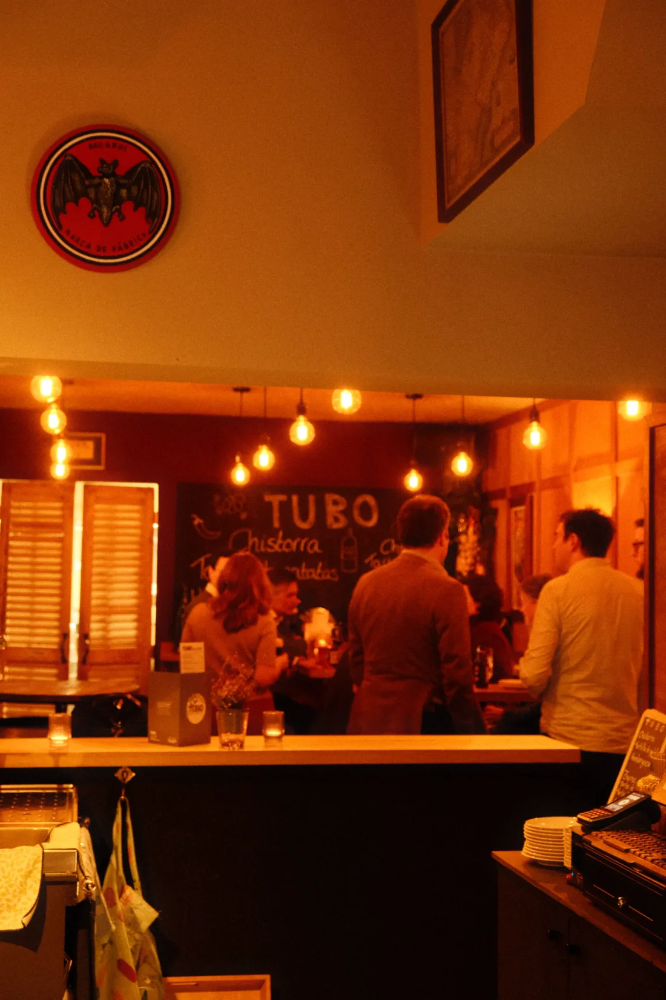

TUBO
Cervezas, vinos y tapas
Een beetje Spanje, een beetje Tilburg, heel veel gezelligheid! Op de hoek van de Stationsstraat.
Open donderdag t/m maandag

Bij Tubo ben je 5 dagen per week welkom: donderdag t/m maandag
- Geen reservering? Geen probleem!
- Alleen een drankje? Gezellig!
- Nog nooit geweest? Kom binnen!
- Vaste gast? Fijn dat je er weer bent!
Kom binnen en blijf gezellig hangen!
¡Hola y bienvenidos!
Midden in de stad vind je een stukje Spanje in Tilburg: een tapasbar op de hoek van de Stationsstraat. Tubo is ontstaan vanuit liefde voor Spanje; lekkere tapas, goede drankjes en vooral gezellig samen zijn.
Aan het roer staat Frodo met fam en fijne collega's. Of je hier nu voor het eerst bent of inmiddels vaste gast bent: schuif aan, maak een praatje, bestel iets lekkers, wees welkom en voel je thuis!
Je hoeft niet altijd een plan te hebben; loop gewoon gezellig binnen en blijf hangen. Kom voor één drankje en blijf voor twee, of drie, of…
Bij Tubo hoeft het allemaal niet zo ingewikkeld: een koude cerveza, een goed glas vino, een lekkere cóctel, een kannetje sangría, heerlijke tapas om te delen en fijn gezelschap.
Ook kun je bij ons gezellig een wedstrijd kijken.

De kaart
Tapas om te delen, koud en warm. Er zijn altijd wisselende tapas buiten het menu om: kijk op de borden of vraag het ons.
Tubo frío koude tapas
Tubo caliente warme tapas
Bebidas drankkaart
Nog een ander lekker flesje wijn? Vraag naar het boekje van Marcel.
Borrelen met vrienden, collega's of familie?
Wij horen het graag, dan maken we samen een borrel op maat. Reden voor een feestje? Neem contact op voor de mogelijkheden voor je eigen borrelplekje.
Mail info@tubotilburg.nl
Wees welkom
Spontaan langskomen? Dat kan! Kom binnen, wees welkom, we regelen een plekje voor je.
Reserveren mag, maar spontaan binnenlopen vinden we minstens zo gezellig. Val lekker binnen na je werk. Kom een drankje doen na het winkelen. Blijf met vrienden of familie uren hangen. Begin met één drankje en eindig met de laatste ronde. Het kan allemaal. En natuurlijk kan dit samen met heerlijke Spaanse tapas. Sommige avonden plan je, andere avonden ontstaan vanzelf.
- Reserveren voor dezelfde dag kan helaas niet, maar we houden altijd plekjes vrij voor een spontaan bezoekje.
- Reserveren voor buiten gaat helaas niet.
- In verband met een besloten feest is het niet mogelijk om voor donderdag 17 december te reserveren.
Openingstijden
| Maandag | 15:00 – 23:00 |
|---|---|
| Dinsdag | gesloten |
| Woensdag | gesloten |
| Donderdag | 15:00 – 23:00 |
| Vrijdag | 15:00 – 01:00 |
| Zaterdag | 15:00 – 01:00 |
| Zondag | 14:00 – 23:00 |
Op dinsdagen en woensdagen ontspannen we zelf even.
Rond de feestdagen
24 december heten we jullie nog van harte welkom voor een borrel op Kerst. Van 25 december tot en met 1 januari zijn we gesloten, en vanaf 2 januari proosten we graag weer op het nieuwe jaar.
Donderdag 17 december: besloten feest, reserveren is die dag niet mogelijk.
Laatst op Instagram
- Laptop dicht, borrel geopend
- Buiten guur, binnen Spaans
- Borrelen tot laat
- De perfecte zondag met livemuziek van Undercover Soul
- Weekendverhalen deel je aan tafel
Kom langs
Stationsstraat 51A
5038 EC Tilburg
Op de hoek van de Stationsstraat, midden in de stad.